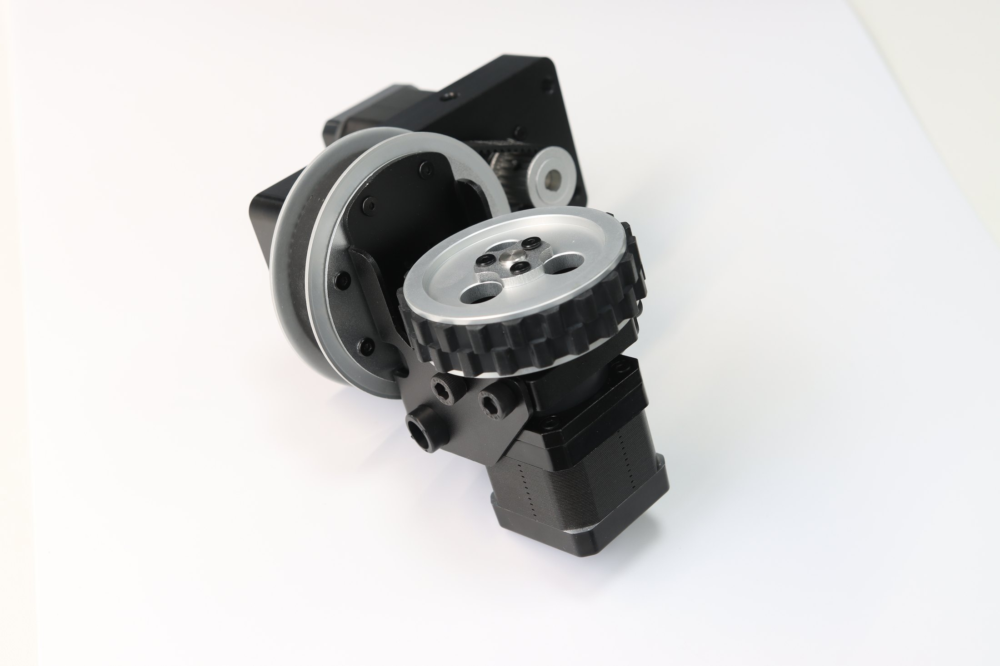
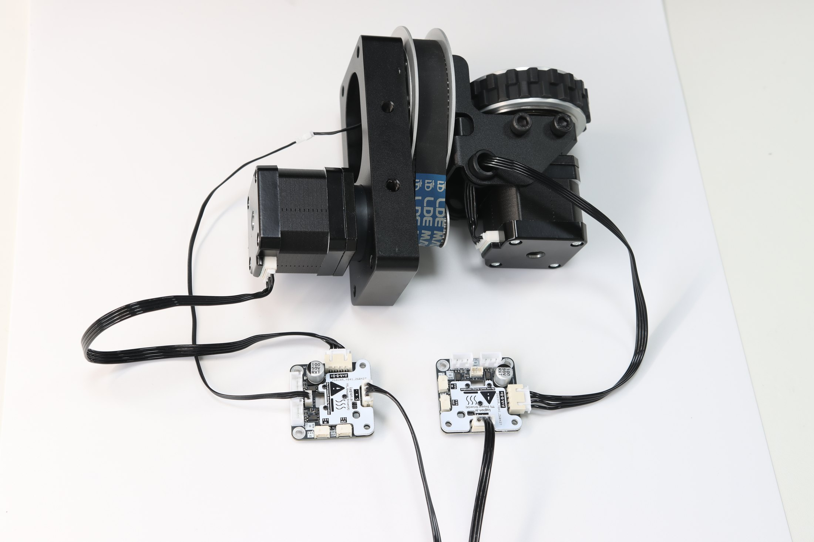
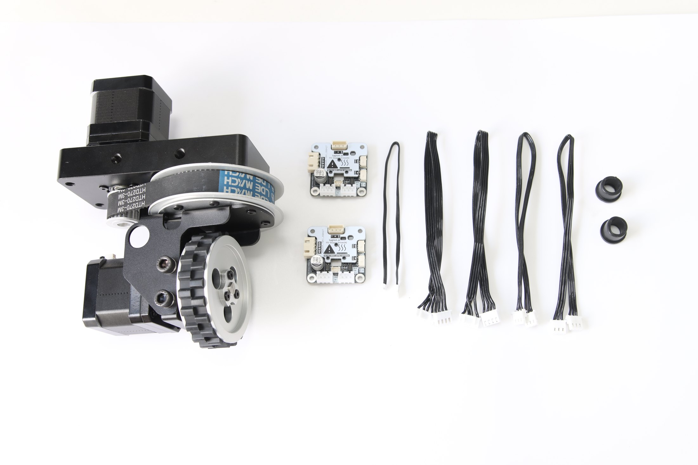

转向
独立控制轮子朝向。
ONE MODULE, FOUR FUNCTIONS
机械结构、电机、驱动和角度反馈已组合为标准单元，缩短底盘设计与联调时间。
独立控制轮子朝向。
控制行走方向与速度。
上电读取真实轮向。
多设备共用 TTL 总线。
OMNIDIRECTIONAL MOTION
多个模组配合底盘运动算法，可实现前后、横移、斜向和原地旋转。


BUS CONTROL
设备设置独立 ID 后，控制器即可发送转向、行走和角度读取指令，无需持续输出 STEP / DIR 脉冲。
ABSOLUTE ANGLE FEEDBACK
上电读取当前轮向，并映射电机位置。
保存角度基准，重新上电后继续使用。
对比目标与真实角度，发现丢步或打滑。
SPECIFICATIONS
PACKAGE CONTENTS
现有素材可说明交付构成，但最终套装图需要按新版实物重新拍摄。

APPLICATION BOUNDARY
整车承载不能简单按模组数量相乘。底盘刚度、重心、加速度、地面、轮胎抓地力和安全系数都会影响实际能力。
更适合室内平整地面。户外、泥水、台阶或强冲击场景需要额外评估防护与结构。
DEVELOPMENT SUPPORT
资料页可继续接入 ID 配置、角度初始化、运动学示例和模型下载。